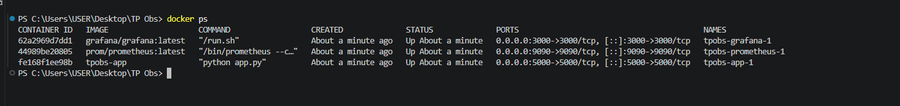
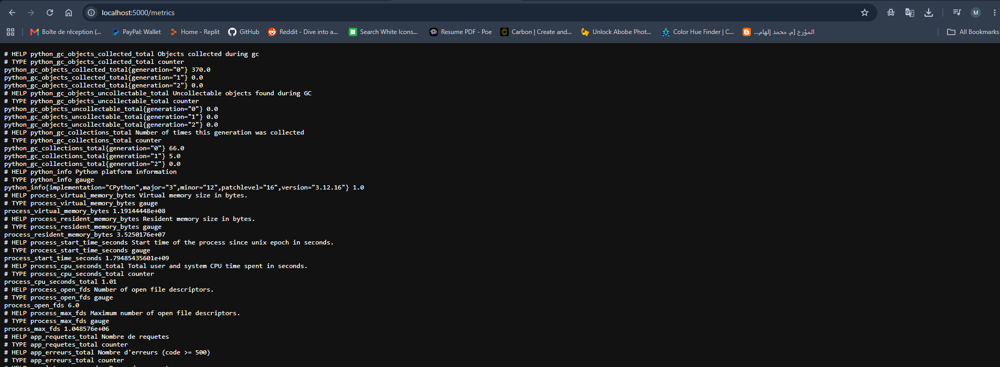
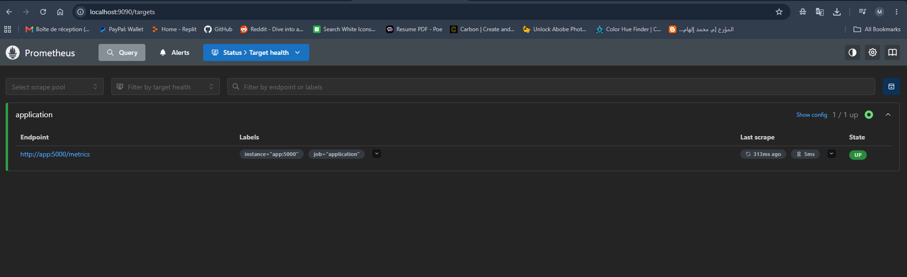
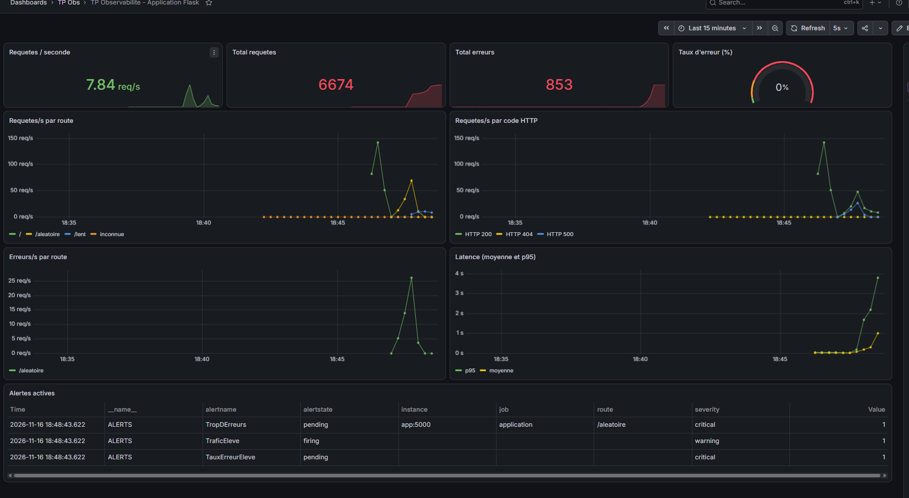
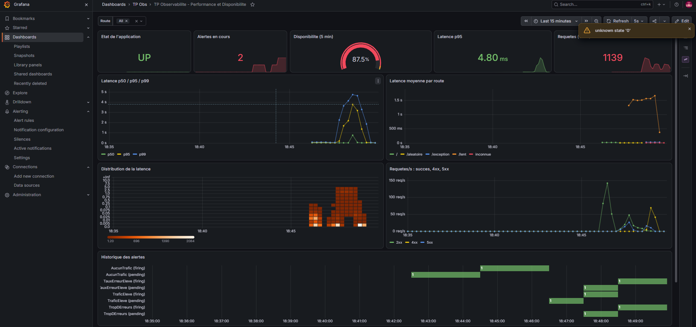
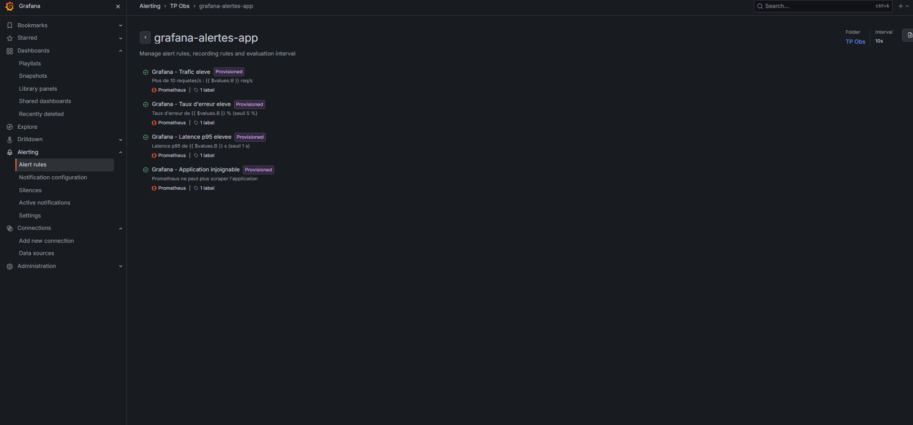
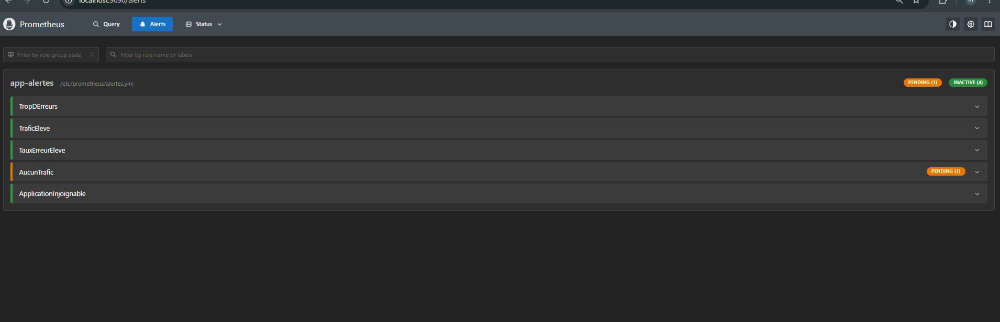
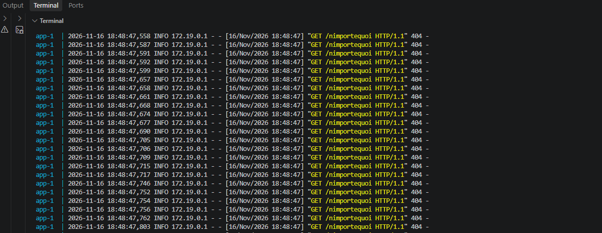
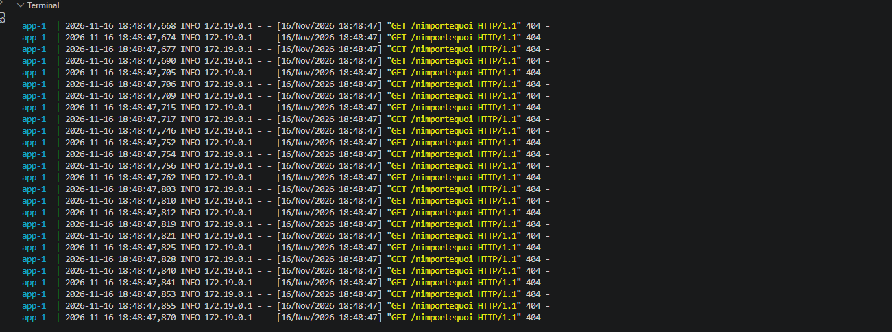

Travaux pratiques — Observabilité
Compte rendu
Supervision d’une application Flask avec Prometheus et Grafana
Métriques applicatives, tableaux de bord, alertes et notifications webhook
 Prometheus
Prometheus
 Grafana
Grafana
1. Objectifs du TP
Ce travail pratique a pour but de mettre en place une chaîne d’observabilité complète autour
d’une petite application web Flask. Il s’agit de passer de la simple journalisation à une
supervision quantitative : collecter des métriques, les stocker dans une base de séries temporelles,
les visualiser, puis déclencher des alertes lorsque le comportement de l’application dévie.
| Axe de travail | Compétence visée |
|---|
| Instrumentation | Exposer des compteurs, des jauges et des histogrammes au format Prometheus avec prometheus_client. |
| Collecte | Configurer le scraping périodique de l’application par Prometheus et vérifier les cibles. |
| Visualisation | Construire et provisionner des tableaux de bord Grafana (débit, erreurs, latence, disponibilité). |
| Alerte | Définir des règles d’alerte, comprendre les états pending / firing et router les notifications. |
| Validation | Générer de la charge, provoquer des erreurs et de la latence, puis vérifier le comportement de la supervision. |
Fil rouge. L’application expose des points d’entrée volontairement dégradables
(/erreur, /aleatoire, /lent, /exception) afin de
produire un trafic réaliste et de faire réagir les tableaux de bord et les alertes.
1.1 Notions abordées
- Métriques : séries temporelles étiquetées (labels) de type compteur, histogramme et jauge.
- Pull model : Prometheus interroge l’application toutes les 5 secondes sur
/metrics.
- PromQL : calcul de débits (
rate), de quantiles (histogram_quantile) et de variations (increase).
- Provisioning : configuration de Grafana par fichiers YAML plutôt que par l’interface graphique.
- Alerting : seuils maintenus pendant une durée (
for), sévérités, routage vers un point de contact.
2. Architecture de la solution
Trois conteneurs principaux sont orchestrés par Docker Compose sur un réseau privé nommé
monitoring. Un générateur de charge externe (hey) vient solliciter
l’application pendant les tests.
Générateur de charge
hey (conteneur)
HTTP · / /aleatoire /lent
requêtes
HTTP
Application Flask
app:5000
/metrics · /webhook-alerte
scrape
toutes les 5 s
Prometheus
prometheus:9090
règles + séries
PromQL
Grafana
grafana:3000
dashboards + alertes
Figure 1 — Chaîne de supervision : collecte par tirage, visualisation, puis notification.
Les alertes sont définies à deux niveaux complémentaires. Prometheus évalue les règles du fichier
alertes.yml et expose leur état via la série ALERTS, que Grafana affiche.
Grafana possède en parallèle ses propres règles (dossier TP Obs) et un point de contact
webhook qui rappelle l’application sur /webhook-alerte : la boucle est
ainsi fermée et la notification est visible dans les journaux de l’application.
| Service | Image | Port hôte | Rôle | Dépend de |
|---|
app | construite (python:3.12-slim) | 5000 | Application supervisée, expose /metrics et reçoit les webhooks | — |
prometheus | prom/prometheus:latest | 9090 | Collecte, stockage et évaluation des règles | app |
grafana | grafana/grafana:latest | 3000 | Tableaux de bord, alerting et point de contact webhook | prometheus |
Réseau Docker. Prometheus et Grafana joignent l’application par son nom de service
(http://app:5000). Depuis l’hôte Windows, on utilise localhost:5000.
Cette distinction est une source classique d’erreurs de configuration.
3. Environnement et prérequis
| Élément | Version / valeur | Usage |
|---|
| Système d’exploitation | Windows (PowerShell 5.1) | Exécution des commandes et du script de charge |
| Docker Engine | 28.5.1 | Conteneurisation des trois services |
| Docker Compose | format de fichier 3.8 | Orchestration locale |
| Python (image) | 3.12-slim | Exécution de l’application Flask |
| Flask | 3.0.3 | Serveur web applicatif |
| prometheus-client | 0.20.0 | Exposition des métriques |
| Générateur de charge | williamyeh/hey (conteneur) | Tests de débit et de latence |
| Navigateur | Chrome / Edge | Consultation de Prometheus et Grafana |
3.1 Ports exposés
| URL | Service | Description |
|---|
http://localhost:5000/ | Application | Page d’accueil et points d’entrée de test |
http://localhost:5000/metrics | Application | Métriques au format texte Prometheus |
http://localhost:9090/targets | Prometheus | État des cibles de collecte |
http://localhost:9090/alerts | Prometheus | Règles et alertes actives |
http://localhost:3000/ | Grafana | Tableaux de bord (admin / admin) |
3.2 Démarrage rapide
# Construire l'image applicative et démarrer la pile
docker compose up --build -d
# Vérifier que les trois services sont sains
docker compose ps
# Suivre les journaux de l'application (erreurs, webhooks)
docker compose logs -f app
Prérequis. Docker Desktop doit être démarré et le moteur accessible depuis PowerShell
(docker info). Les ports 3000, 5000 et 9090 doivent être libres.
4. Mise en œuvre
4.1 Instrumentation de l’application Flask
Les métriques sont déclarées au chargement du module puis mises à jour dans des crochets Flask :
before_request mesure l’instant de départ, after_request incrémente les
compteurs et observe la latence. Les routes techniques /metrics et
/webhook-alerte sont exclues du comptage pour éviter de fausser les indicateurs et toute
récursion.
| Métrique | Type | Étiquettes | Signification |
|---|
app_requetes_total | Counter | route, code | Nombre cumulé de requêtes traitées, par route et code HTTP |
app_erreurs_total | Counter | route | Nombre d’erreurs serveur (code ≥ 500) |
app_latence_secondes | Histogram | route | Distribution des durées de traitement (moyenne et quantiles) |
# Déclaration des métriques (app.py)
REQUETES = Counter("app_requetes_total", "Nombre de requetes", ["route", "code"])
ERREURS = Counter("app_erreurs_total", "Nombre d'erreurs (code >= 500)", ["route"])
LATENCE = Histogram("app_latence_secondes", "Duree des requetes", ["route"])
# after_request : enregistrement du code, de la durée et des erreurs
route = request.url_rule.rule if request.url_rule else "inconnue"
REQUETES.labels(route=route, code=response.status_code).inc()
LATENCE.labels(route=route).observe(time.time() - request._debut)
if response.status_code >= 500:
ERREURS.labels(route=route).inc()
Le gestionnaire d’exceptions global renvoie un code 500 pour les erreurs inattendues, tout en
conservant les codes natifs inférieurs à 500 (404, 405…). C’est ce qui permet de
distinguer, dans les tableaux de bord, un trafic en erreur d’un simple 404.
4.2 Points d’entrée de l’application
| Route | Comportement | Usage dans le TP |
|---|
/ | Répond « Bonjour, application supervisee ! » | Trafic normal (2xx) |
/erreur | Renvoie 500 et journalise une erreur | Erreur contrôlée |
/aleatoire?taux=40 | Échoue aléatoirement selon un pourcentage (30 % par défaut) | Génération d’erreurs réalistes |
/lent?max=3 | Dort entre 0 et max secondes | Pic de latence |
/exception | Provoque une division par zéro captée par le gestionnaire global | Exceptions non gérées |
/nimportequoi | Renvoie 404 (compté dans les requêtes, pas dans les erreurs) | Vérifier la distinction 4xx / 5xx |
/metrics | Expose toutes les séries au format Prometheus | Collecte par Prometheus |
/webhook-alerte | Journalise les alertes reçues de Grafana (POST JSON) | Réception des notifications |
4.3 Configuration de Prometheus
Prometheus collecte la cible app:5000 toutes les 5 secondes et charge le fichier de
règles alertes.yml. L’intervalle court rend les variations visibles rapidement
pendant les tests.
global:
scrape_interval: 5s
rule_files:
- alertes.yml
scrape_configs:
- job_name: "application"
static_configs:
- targets: ["app:5000"]
4.4 Provisioning Grafana
Grafana est configuré par fichiers : la source de données Prometheus est déclarée avec l’UID
prometheus, le dossier TP Obs est alimenté par le répertoire des tableaux de bord,
et les règles d’alerte ainsi que le point de contact sont chargés au démarrage.
| Fichier | Rôle |
|---|
provisioning/datasources/prometheus.yml | Source de données par défaut vers http://prometheus:9090 |
provisioning/dashboards/dashboards.yml | Fournisseur de tableaux de bord (dossier TP Obs, rafraîchissement 10 s) |
dashboards/observabilite.json | Tableau de bord principal (débit, erreurs, latence, alertes) |
dashboards/performance.json | Tableau de bord performance et disponibilité |
provisioning/alerting/rules.yml | Règles d’alerte Grafana |
provisioning/alerting/contact-points.yml | Point de contact webhook et politique de notification |
Tableau de bord « Observabilité »
| Panneau | Expression principale |
|---|
| Requêtes / seconde | sum(rate(app_requetes_total[30s])) |
| Total requêtes | sum(app_requetes_total) |
| Total erreurs | sum(app_erreurs_total) or vector(0) |
| Taux d’erreur (%) | 100 * erreurs / requêtes (rate 30 s) |
| Requêtes/s par route et par code | sum(rate(...)) by (route) / by (code) |
| Erreurs/s par route | sum(rate(app_erreurs_total[30s])) by (route) |
| Latence moyenne et p95 | histogram_quantile(0.95, ...) et sum(rate(_sum))/sum(rate(_count)) |
| Alertes actives | ALERTS{alertstate=~"firing|pending"} |
Tableau de bord « Performance et disponibilité »
Ce second tableau de bord ajoute une variable de filtre route, l’état de la cible
(min(up{job="application"})), la disponibilité sur 5 minutes, les quantiles p50 / p95 / p99,
une carte de chaleur de la distribution de latence, la répartition 2xx / 4xx / 5xx, l’historique
des alertes et la liste des alertes Grafana.
4.5 Alertes et notification
Deux jeux de règles coexistent. Les règles Prometheus s’appuient directement sur PromQL ; les
règles Grafana enchaînent une requête, une réduction (last) et un seuil.
Règles Prometheus (alertes.yml)
| Alerte | Condition | Durée | Sévérité |
|---|
| TropDErreurs | increase(app_erreurs_total[1m]) > 5 | 30 s | critical |
| TraficEleve | sum(rate(app_requetes_total[30s])) > 10 | 30 s | warning |
| TauxErreurEleve | sum(increase(app_erreurs_total[1m])) > 5 | 1 min | critical |
| AucunTrafic | sum(rate(app_requetes_total[2m])) == 0 | 2 min | info |
| ApplicationInjoignable | up{job="application"} == 0 | 15 s | critical |
Règles Grafana (provisioning/alerting/rules.yml)
| Alerte | Condition | Durée | Sévérité |
|---|
| Grafana - Trafic elevé | Débit > 10 req/s | 30 s | warning |
| Grafana - Taux d’erreur eleve | Taux d’erreur > 5 % | 1 min | critical |
| Grafana - Latence p95 elevee | p95 > 1 s | 30 s | warning |
| Grafana - Application injoignable | min(up{job="application"}) < 1 | 20 s | critical |
Remarque d’analyse. La règle Prometheus TauxErreurEleve est libellée
« plus de 5 % des requêtes en erreur » mais son expression compte un nombre
absolu d’erreurs (increase(...) > 5), sans division par le trafic. La version
Grafana corrige ce point avec un véritable pourcentage. Une amélioration cohérente consisterait à
aligner l’expression Prometheus sur
100 * sum(rate(app_erreurs_total[1m])) / sum(rate(app_requetes_total[1m])) > 5.
Le point de contact webhook-app envoie un POST JSON vers
http://app:5000/webhook-alerte. L’application parcourt le tableau
alerts et journalise, pour chaque alerte, son statut et son nom. La politique de
notification regroupe par alertname avec un premier envoi après 10 s, un intervalle
de groupe de 30 s et une répétition toutes les heures.
5. Procédure de test et génération de charge
Le script test.ps1 enchaîne cinq phases de charge via le conteneur hey, en
ciblant l’application exposée sur l’hôte (host.docker.internal:5000). Chaque
phase vise un comportement précis de la supervision.
| Phase | Commande ciblée | Durée / charge | Comportement attendu |
|---|
| 1 | / | 30 s, 20 connexions | Trafic normal : débit stable, taux d’erreur nul |
| 2 | /aleatoire?taux=40 | 45 s, 20 connexions | Environ 40 % de 500 : taux d’erreur élevé, alertes d’erreurs |
| 3 | /lent?max=3 | 45 s, 20 connexions | Latence p95 en hausse, alerte de latence |
| 4 | /exception | 300 requêtes, 20 connexions | Pic de 500 et journaux d’exceptions non gérées |
| 5 | /nimportequoi | 20 s, 10 connexions | 404 visibles dans les requêtes, mais hors compteur d’erreurs |
# Lancer la campagne de charge depuis la racine du projet
.\test.ps1
# Vérification manuelle d'un point d'entrée
Invoke-WebRequest http://localhost:5000/ -UseBasicParsing | Select-Object StatusCode
# Observer les métriques brutes
Invoke-WebRequest http://localhost:5000/metrics -UseBasicParsing | Select-Object -Expand Content
Astuce. Pour rendre l’incident visible dans Grafana, conserver la plage temporelle
« 15 dernières minutes » et un rafraîchissement automatique de 5 s.
L’alerte passe d’abord à l’état pending pendant la durée for,
puis à firing si la condition persiste.
5.1 Protocole d’observation
- Démarrer la pile et vérifier la cible Prometheus (UP).
- Ouvrir les deux tableaux de bord Grafana et noter l’état au repos.
- Exécuter les phases de charge une par une, en laissant 30 s d’observation entre deux.
- Relever l’heure de début de chaque phase pour la retrouver sur les graphiques.
- Consulter
/alerts dans Prometheus et la page d’alerting Grafana.
- Vérifier dans les journaux de l’application la réception des notifications webhook.
- Capturer les écrans demandés au chapitre 6, puis compléter le tableau du chapitre 7.
6. Captures d’écran à insérer
Les captures ci-dessous ont été réalisées pendant et juste après la campagne de charge, afin
que les graphiques et les alertes soient significatifs. Elles illustrent successivement le
déploiement, l’exposition des métriques, la collecte, les tableaux de bord, l’alerting et
la notification webhook.
| N° | Écran / URL | Élément à capturer | Fichier | Fait |
|---|
| 1 | PowerShell / Docker Desktop | Conteneurs Up | capture-01-docker-ps.png | ✔ |
| 2 | localhost:5000/metrics | Métriques brutes et libellés | capture-02-metrics.png | ✔ |
| 3 | localhost:9090/targets | Cible application à l’état UP | capture-03-targets.png | ✔ |
| 4 | Grafana — Observabilité | Tableau de bord complet sous charge | capture-04-dashboard-observabilite.png | ✔ |
| 5 | Grafana — Performance | Latence p50/p95/p99 et disponibilité | capture-05-dashboard-performance.png | ✔ |
| 6 | Grafana — Alerting | Règle en état Firing | capture-06-grafana-alerting.png | ✔ |
| 7 | localhost:9090/alerts | Alertes Prometheus actives | capture-07-prometheus-alerts.png | ✔ |
| 8 | Journaux docker compose logs app | Ligne NOTIFICATION GRAFANA | capture-08-webhook-logs.png | ✔ |
| 9 | Journaux docker compose logs app | Trace d’exception non gérée | capture-09-exception-logs.png | ✔ |
Capture 1 — Conteneurs en cours d’exécution
capture-01-docker-ps.png

Les trois services (app, prometheus, grafana) sont à l’état Up et les ports sont correctement publiés.
Capture 2 — Exposition des métriques
capture-02-metrics.png

Séries exposées par l’application sur /metrics : compteurs de requêtes et d’erreurs, histogramme de latence et leurs étiquettes.
Capture 3 — Cible Prometheus
capture-03-targets.png

La cible application est UP : Prometheus collecte app:5000 toutes les 5 secondes.
Capture 4 — Tableau de bord Observabilité
capture-04-dashboard-observabilite.png

Vue d’ensemble sous charge : débit par route et par code HTTP, erreurs, taux d’erreur, latence moyenne et p95, alertes actives.
Capture 5 — Tableau de bord Performance et disponibilité
capture-05-dashboard-performance.png

Disponibilité, latence p50/p95/p99, distribution de la latence et répartition des codes HTTP pendant les tests.
Capture 6 — Alerte Grafana en cours
capture-06-grafana-alerting.png

Règle Grafana passée à l’état Firing avec sa valeur courante et sa sévérité.
Capture 7 — Alertes Prometheus actives
capture-07-prometheus-alerts.png

Alertes Prometheus actives : TraficEleve en firing, TropDErreurs et TauxErreurEleve en pending, avec sévérité et expression.
Capture 8 — Notification webhook reçue
capture-08-webhook-logs.png

Notification reçue par l’application : ligne NOTIFICATION GRAFANA [...] et réponse 204 sur /webhook-alerte.
Capture 9 — Exception non gérée dans les journaux
capture-09-exception-logs.png

Trace d’exception non gérée (ZeroDivisionError) journalisée par l’application pendant la phase 4.
7. Résultats et analyse
Compléter le tableau ci-dessous avec les valeurs observées pendant la campagne de charge, puis
commenter les écarts éventuels par rapport aux attentes.
| Indicateur | Attendu | Observé | Écart / commentaire |
|---|
Cible Prometheus up | 1 (UP) | | |
| Débit phase 1 | Stable, > 10 req/s | | |
| Taux d’erreur phase 2 | Proche de 40 % | | |
| Latence p95 phase 3 | > 1 s (seuil d’alerte) | | |
| Erreurs phase 4 | Pic de 500 et exceptions journalisées | | |
| Phase 5 (404) | Requêtes visibles, compteur d’erreurs inchangé | | |
| Alerte TraficEleve | Firing pendant les phases 1 à 4 | | |
| Alerte de taux d’erreur | Firing pendant la phase 2 | | |
| Alerte de latence | Firing pendant la phase 3 | | |
| Notification webhook | Ligne visible dans les journaux | | |
7.1 Points d’analyse attendus
- Le débit calculé par
rate(...[30s]) correspond-il au trafic réellement envoyé par hey ?
- Le taux d’erreur mesuré est-il cohérent avec le paramètre
taux=40 ?
- Le pic de latence est-il visible simultanément sur la moyenne et sur le p95 ? Pourquoi le p95 réagit-il plus fortement ?
- Les alertes passent-elles par l’état pending avant firing, et le délai respecte-t-il la durée
for ?
- Les 404 de la phase 5 incrémentent-ils
app_requetes_total sans incrémenter app_erreurs_total ?
Interprétation attendue. La supervision doit permettre d’identifier la nature d’une
dégradation : erreurs applicatives (compteur d’erreurs et taux), ralentissement (latence p95),
ou perte de disponibilité (up == 0). C’est la combinaison de ces signaux qui rend
l’observabilité exploitable, et non un seul indicateur isolé.
8. Difficultés rencontrées et solutions
| Difficulté | Cause probable | Solution |
|---|
| La cible Prometheus reste DOWN | L’application n’écoute pas ou le nom d’hôte est incorrect | Vérifier docker compose ps et utiliser app:5000 depuis le réseau Docker |
| Aucune métrique applicative visible | Trafic uniquement sur des routes techniques ou application non sollicitée | Générer du trafic sur / puis consulter /metrics |
| Les 404 gonflent le taux d’erreur | Confusion entre erreurs client et erreurs serveur | Le compteur ne prend que les codes ≥ 500 ; vérifier l’expression utilisée |
| Le webhook ne journalise rien | Point de contact non chargé ou URL hors réseau Docker | Contrôler contact-points.yml et l’URL http://app:5000/webhook-alerte |
| Tableau de bord absent dans Grafana | Chemin de provisioning incorrect ou JSON invalide | Vérifier le volume /var/lib/grafana/dashboards et les journaux Grafana |
| Alertes jamais firing | Durée for non atteinte ou seuil trop haut | Maintenir la charge plus longtemps et ajuster le seuil pendant les tests |
| Port déjà utilisé | Un service local occupe 3000, 5000 ou 9090 | Libérer le port ou modifier le mappage dans docker-compose.yml |
9. Conclusion et pistes d’amélioration
La pile mise en place couvre l’ensemble de la boucle d’observabilité : l’application
expose des métriques étiquetées, Prometheus les collecte et évalue des règles, Grafana les restitue
dans deux tableaux de bord provisionnés et route les alertes vers un webhook applicatif. Les scénarios
de charge montrent que les indicateurs réagissent de façon cohérente aux erreurs, aux ralentissements et
aux exceptions.
Au-delà de la validation fonctionnelle, le TP met en évidence plusieurs bonnes pratiques : exclure les
routes techniques du comptage, distinguer les erreurs client des erreurs serveur, faire reposer les
alertes sur un ratio plutôt que sur un volume brut, et versionner la configuration (provisioning) plutôt
que de la saisir dans l’interface.
9.1 Améliorations envisagées
- Aligner l’expression Prometheus TauxErreurEleve sur un véritable pourcentage et supprimer le doublon avec TropDErreurs.
- Ajouter des métriques métier (nombre de commandes, panier moyen, files d’attente) et un exportateur de journaux.
- Persister les données Prometheus et Grafana dans des volumes nommés pour survivre aux redémarrages.
- Ajouter un blackbox exporter pour tester la disponibilité de bout en bout et un Alertmanager pour le routage avancé (courriel, Slack).
- Verrouiller les secrets (mot de passe Grafana, futures clés d’API) dans un fichier d’environnement non versionné.
- Industrialiser la vérification en intégration continue (démarrage de la pile et tests de fumée sur les métriques).
Bilan. Le dispositif est fonctionnel, reproductible et lisible. Il constitue une base saine
pour aborder des architectures plus larges (Kubernetes, Loki, Tempo, OpenTelemetry) sans changer les
principes : mesurer, corréler, alerter, puis agir.
Date et signature de l’étudiant
Observation de l’enseignant
Annexe A — Commandes utiles
# Démarrer / arrêter / reconstruire
docker compose up --build -d
docker compose down
docker compose down -v
# État et journaux
docker compose ps
docker compose logs -f app
docker compose logs -f prometheus
docker compose logs -f grafana
# Recharger la configuration Prometheus (si activé)
docker compose exec prometheus \
wget -qO- --post-data="" http://localhost:9090/-/reload
# Campagne de charge
.\test.ps1
# Vérifications HTTP
Invoke-WebRequest http://localhost:5000/ -UseBasicParsing
Invoke-WebRequest http://localhost:5000/metrics -UseBasicParsing
Annexe B — Arborescence du projet
TP Obs/
├── app.py # application Flask instrumentée
├── Dockerfile # image python:3.12-slim
├── docker-compose.yml # app + prometheus + grafana
├── requirements.txt # flask, prometheus-client
├── prometheus.yml # scrape 5 s + rule_files
├── alertes.yml # règles d'alerte Prometheus
├── test.ps1 # 5 phases de charge (hey)
└── grafana/
├── dashboards/
│ ├── observabilite.json
│ └── performance.json
└── provisioning/
├── alerting/
│ ├── contact-points.yml
│ └── rules.yml
├── dashboards/dashboards.yml
└── datasources/prometheus.yml
Fin du compte rendu — TP Observabilité